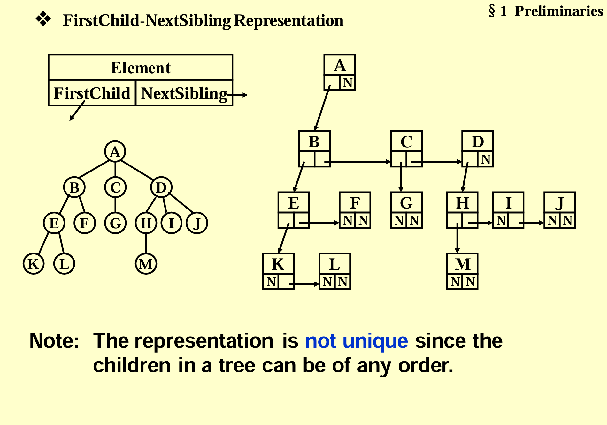
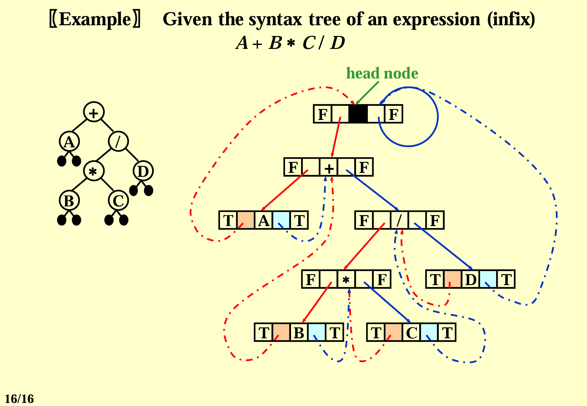
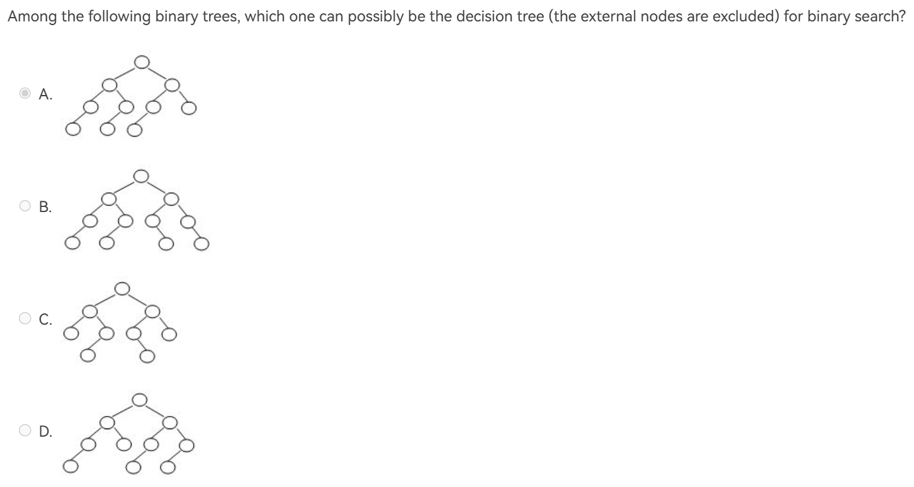
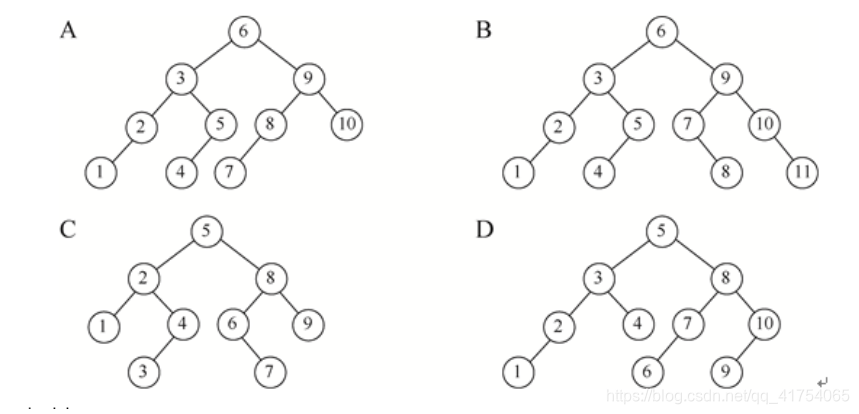

一些需要记的定理¶
C5 树¶
- 普通树转为二叉树，其实是将数的结构定义为FirstChild-NextSibling的形式。在这样的情况下，普通树的后序遍历就是二叉树中序遍历。

postorder of T:
KLEFBGCMHIJDAinorder of BT:KLEFBGCMHIJDA - 线索二叉树用空的左节点记录前驱，空的右节点记录后继，有效地节省了空间。前驱与后继由遍历方式决定。如图中的线索二叉树采取中序遍历。 
C6 二叉树，二叉搜索树¶
- 插入(insert)：若为空树，则直接创建一个节点，否则则一直与当前节点比较，若下一个节点为空，说明找到了应该插入的位置。
C
SearchTree Insert( ElementType X, SearchTree T ) { if ( T == NULL ) { /* Create and return a one-node tree */ T = malloc( sizeof( struct TreeNode ) ); if ( T == NULL ) FatalError( "Out of space!!!" ); else { T->Element = X; T->Left = T->Right = NULL; } } else /* If there is a tree */ if ( X < T->Element ) T->Left = Insert( X, T->Left ); else if ( X > T->Element ) T->Right = Insert( X, T->Right ); /* Else X is in the tree already; we'll do nothing */ return T; } - 对于给定的元素集，其构建出的二叉搜索树的形状取决于插入元素的顺序。
- 删除(delete)：当我们要删除一个节点
- 如果其度为0，我们可以直接删去这个节点；
- 如果其度为1，我们用其唯一的子节点覆盖当前节点；
- 如果其度为2，我们一般有两种选择：
- 从当前节点的左子树选择一个最大的放在当前节点
- 从当前节点的右子树选择一个最小的放在当前节点 其中我们会发现，我们选择的节点的度最多是1，这使得删除操作是有穷的。
- C
SearchTree Delete( ElementType X, SearchTree T ) { Position TmpCell; if ( T == NULL ) Error( "Element not found" ); else if ( X < T->Element ) /* Go left */ T->Left = Delete( X, T->Left ); else if ( X > T->Element ) /* Go right */ T->Right = Delete( X, T->Right ); else /* Found element to be deleted */ if ( T->Left && T->Right ) { /* Two children */ /* Replace with smallest in right subtree */ TmpCell = FindMin( T->Right ); T->Element = TmpCell->Element; T->Right = Delete( T->Element, T->Right ); } /* End if */ else { /* One or zero child */ TmpCell = T; if ( T->Left == NULL ) /* Also handles 0 child */ T = T->Right; else if ( T->Right == NULL ) T = T->Left; free( TmpCell ); } return T; } - 懒惰删除(lazy delete)：对于删除次数不是很多的情况下，我们可以不实际释放一个节点的内存，而是增加一个布尔变量来表示当前节点是否被删除。我们可以标记被删除的节点，在进行遍历等操作时跳过该节点。当我们要重新插入当前元素时，我们可以不重新分配内存，而是直接修改布尔变量。 懒惰删除适用于删除次数不那么多的情况下，如果一个二叉搜索树中被标记删除的节点过多（超过一半），会导致其他操作的表现很糟糕。
- 折半查找树(decision tree)：折半查找树其实是根据二分查找的规则定义在二叉搜索树上。对于一棵树，我们根据中序遍历将每个节点从1开始编号，以最大编号与最小编号的和除以2作为中值\(mid\)。其中，对于和为奇数的情况，除以2涉及到取整问题，在一颗折半查找树中，取整方式是统一的。
- 例题  编号后有  对于B：4 5，7 8 不符。 对于C：3 4，6 7 不符。 对于D：9 10，1 10 不符
C7 堆¶
- 插入(insert)：由于堆是一棵完全二叉树，所以向堆中插入元素只有一个位置。假设这里我们的堆是最小堆。将该元素放在这个唯一位置上后，我们还需要将元素与其父节点比较，若父节点较大，则将父节点下移。若父节点较小，则说明找到了当前元素应该插入的位置，即完成了一次percolate up。
C这段例程中，
/* H->Element[ 0 ] is a sentinel */ void Insert( ElementType X, PriorityQueue H ) { int i; if ( IsFull( H ) ) { Error( "Priority queue is full" ); return; } for ( i = ++H->Size; H->Elements[ i / 2 ] > X; i /= 2 ) H->Elements[ i ] = H->Elements[ i / 2 ]; H->Elements[ i ] = X; }H->Element[0]被设置为一个小于堆中最小数的一个数，以使某个很小的数到了堆顶能够停下。 - 删除堆顶(delete min)：当我们需要删除堆顶元素时，我们一般用堆中的最后一个元素替换堆顶的元素，再将该元素与其两个孩子节点比较，用更小的那个孩子节点替换它，以此一步步percolate down。
C
ElementType DeleteMin( PriorityQueue H ) { int i, Child; ElementType MinElement, LastElement; if ( IsEmpty( H ) ) { Error( "Priority queue is empty" ); return H->Elements[ 0 ]; } MinElement = H->Elements[ 1 ]; /* save the min element */ LastElement = H->Elements[ H->Size-- ]; /* take last and reset size */ for ( i = 1; i * 2 <= H->Size; i = Child ) { /* Find smaller child */ Child = i * 2; if (Child != H->Size && H->Elements[Child+1] < H->Elements[Child]) Child++; if ( LastElement > H->Elements[ Child ] ) /* Percolate one level */ H->Elements[ i ] = H->Elements[ Child ]; else break; /* find the proper position */ } H->Elements[ i ] = LastElement; return MinElement; }
C8 并查集¶
-
Union-by-Size Always change the smaller tree. Let \(T\) be the tree created by union-by-size with N nodes,then \(height(T)\leq log_2N+1\)
-
Relation
~means \(equivalence\ relation\) over \(S\), iff it's \(symmetric\), \(reflextive\) and \(transitive\) over \(S\). symmetric对称性(\(\forall a\in S,a\ R\ a\))reflexive自反性(\(a\ R\ b \Leftrightarrow b\ R\ a\))transitive传递性(\(a\ R\ b,b\ R\ c\Rightarrow b\ R\ c\))- Path Compression示例代码
C
SetType Find ( ElementType X, DisjSet S ) { if ( S[ X ] <= 0 ) return X; else return S[ X ] = Find( S[ X ], S ); } SetType Find ( ElementType X, DisjSet S ) { ElementType root, trail, lead; for ( root = X; S[ root ] > 0; root = S[ root ] ); /* find the root */ for ( trail = X; trail != root; trail = lead ) { lead = S[ trail ] ; S[ trail ] = root ; } return root ; }